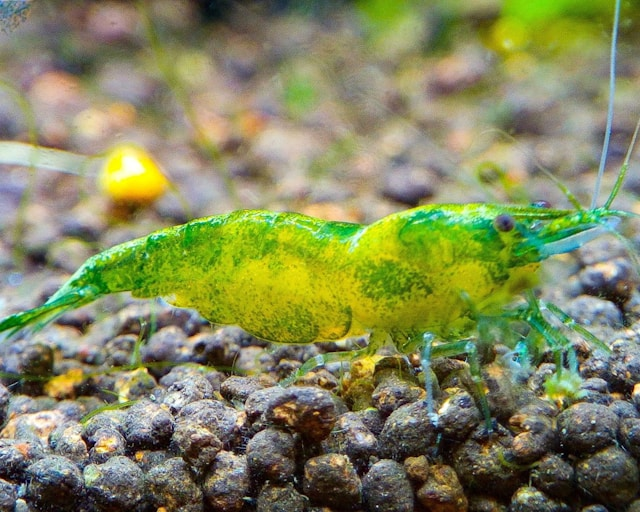
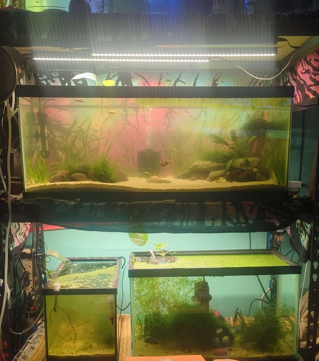
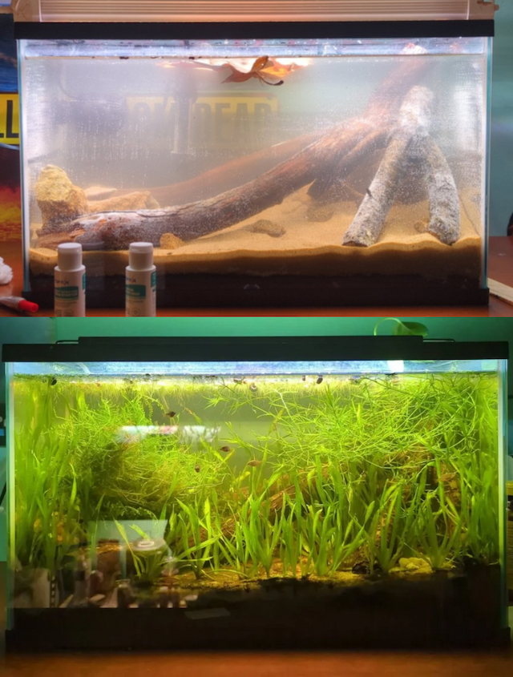
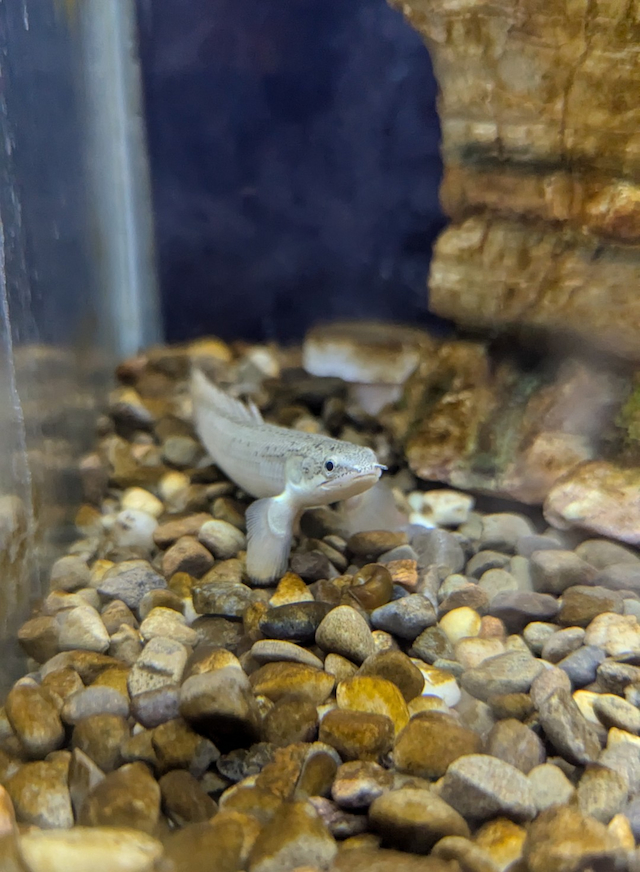

Tanks 4 Everything
Freshwater fun for everyone

We provide Aquarium building services and excellent specimens for already established tanks!
Our Services

Custom Tank Design
We build and design racks, desks, and entire shelving units. Whether it's a single custom tank or an entire rack for your fish room,we've got you covered.
Setups can include multiple tanks, custom filtration, and onboard reverse osmosis water purification.

Tank Cycling & Maintenance Services
Excited to finally own your own mini ecosystem, but too impatient to wait for the nitrogen cycle to establish before adding fish?
Well that's exactly why we offer "pre-cycled tanks" with plants, bio-active substrate & water, and an active microfauna colony to ensure you're ready to stock on day one.
Have a tank that just can't seem to flourish? Tired of struggling to figure out what's wrong?
Good news! We come to you! With aquarium specialists on standby, we can perform a full tank diagnosis and set you up with a solution right at home!

Exotics and Plants
We also provide a wide selection of healthy, captive-bred exotic fish and invertebrates to bring any aquarium to life.
We offer a wide selection of plants to give your new tenants a natural environment.
Our specialists are available via text or phone call to answer any questions regarding care requirements, tank mate suggestions, and any other advice you may have regarding our stocking options.
Customer Reviews
★★★★★
"Real good service. My custom tank came out better than I imagined. My hillstream loaches are thriving and even breeding! these guys really know their stuff!"
- Capt. Cole Z.
★★★★★
"Super knowledgeable team. Im super new to the hobby so when my plants started dying shorty after planting, i panicked! Thankfully aquatic plant specialist Mike explained this was normal for new plants as they grow aquatic leaves. Instead of selling me a solution to a problem i didnt have,they were honest and helpful."
- Karl L.
★★★★☆
"The selection Neocaridina shrimp was impressive. A little pricy but everything I bought was healthy and acclimated perfectly. "
- Topher I.